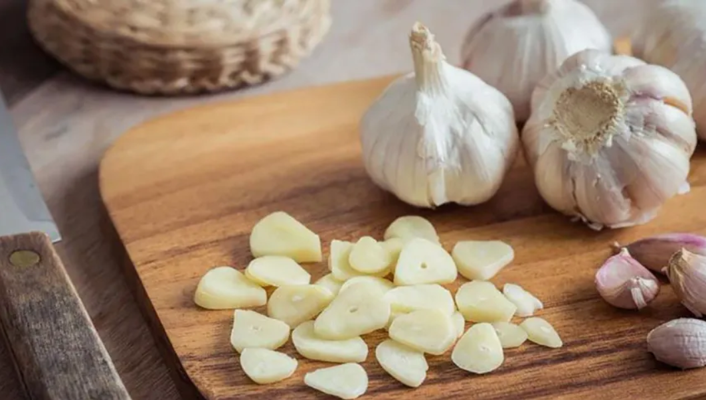
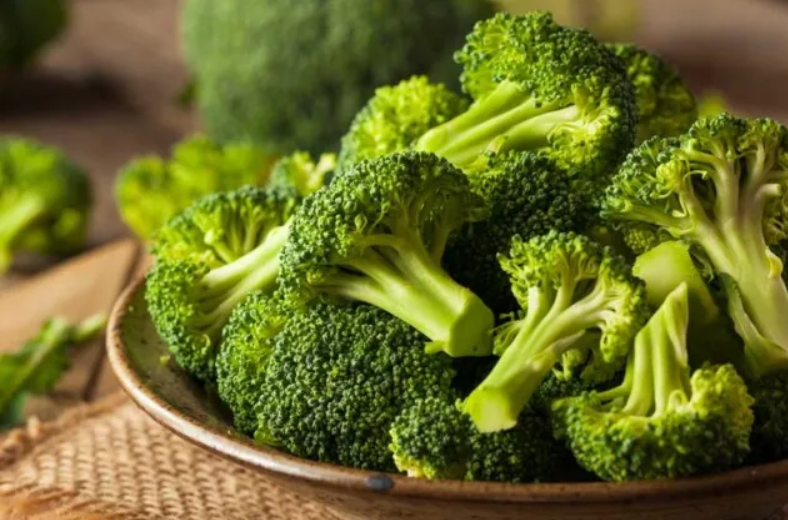
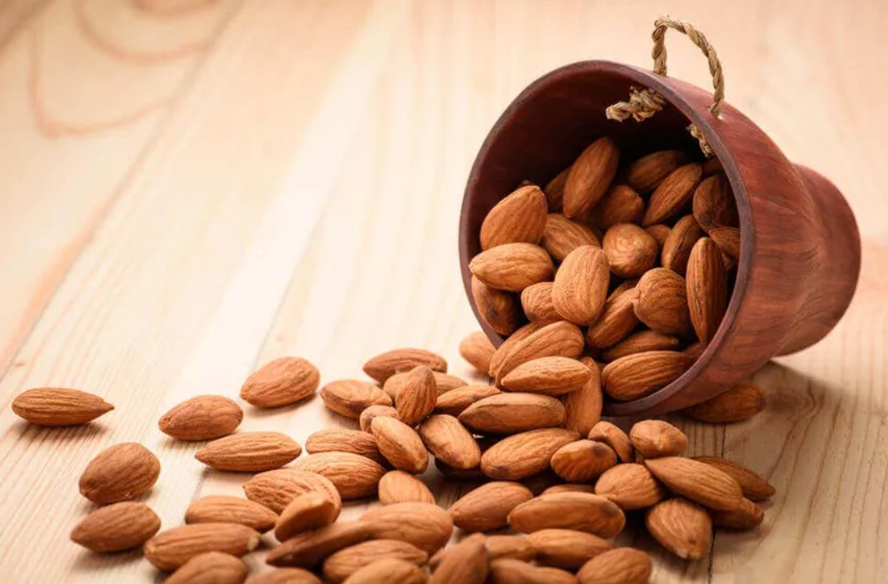
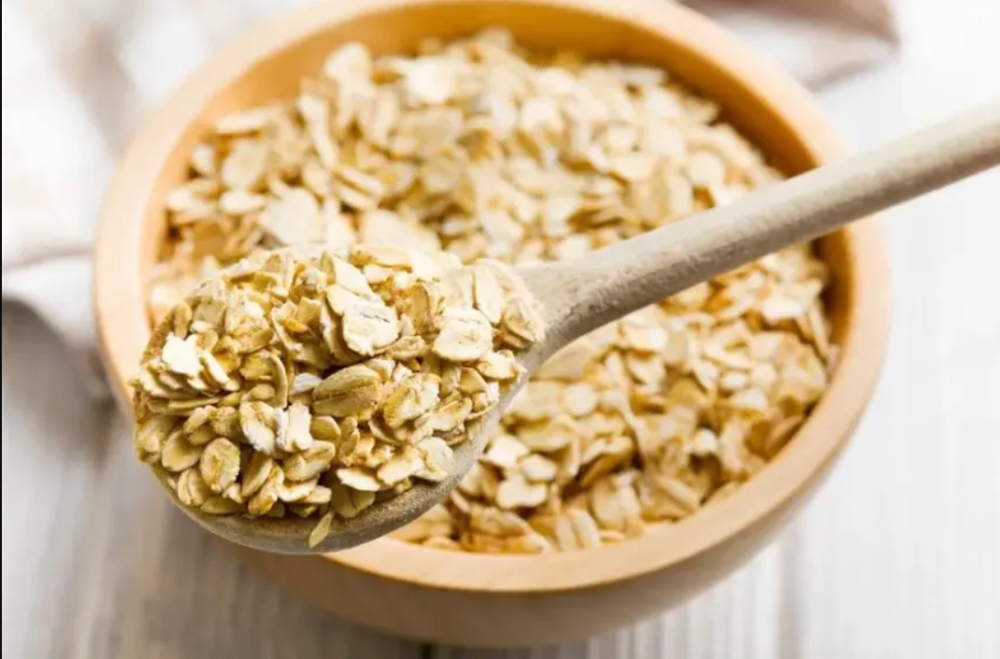

Ajo
Ajo
Este alimento es un potente antiséptico, antibiótico y antifúngico, por lo que es un aliado contra las infecciones. También destaca por su poder depurativo, ayudando a eliminar las toxinas y regenerando la flora intestinal. El ajo es un protector cardiovascular, reduce el nivel de colesterol malo y protege las arterias y el corazón. Contiene yodo, fósforo, potasio y vitaminas C y B6.
Brócoli
Brócoli
Este vegetal tiene propiedades anticancerígenas ya que contiene vitamina A, C y E, aminoácidos, zinc y potasio. Ayuda a eliminar el colesterol malo y su contenido en fibra protege frente a las enfermedades cardiovasculares. El hierro, clorofila y ácido fólico lo hacen ideal para personas con anemia ferropénica. Además, protege los huesos y la salud ocular.
Almendras
Almendras
Son muy ricas en nutrientes, magnesio, vitaminas E, hierro, fibra, fósforo y calcio. Ayudan a fortalecer los huesos, el cabello, la piel y protegen el corazón. Este fruto seco es muy saciante por su contenido en grasas y fibra. Son muy energéticas, antioxidantes y refuerzan el sistema imnune. Tómalas como aperitivo o inclúyelas en tus platos
Cereales integrales
Cereales integrales
La avena y la cebada tienen un alto contenido en fibra, que resulta muy saciante, ayuda a la digestión y controla el azúcar en sangre, disminuyendo el colesterol malo y reduciendo el riesgo de cáncer de colon. Utiliza estos cereales también al rebozar, aprovechando todas sus propiedades.